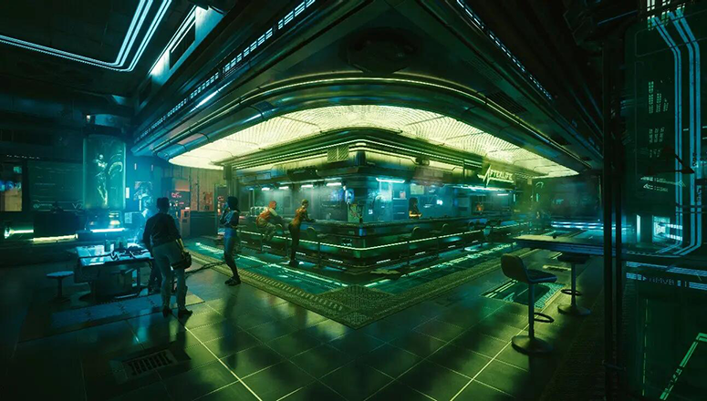
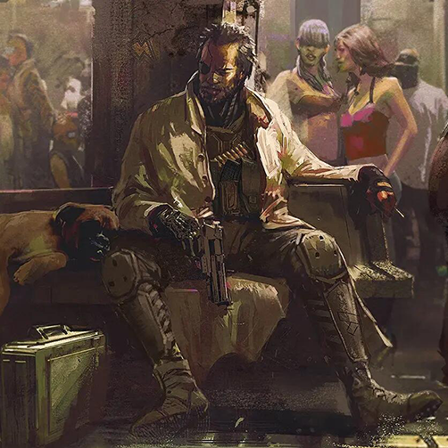
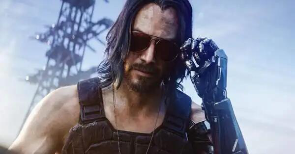
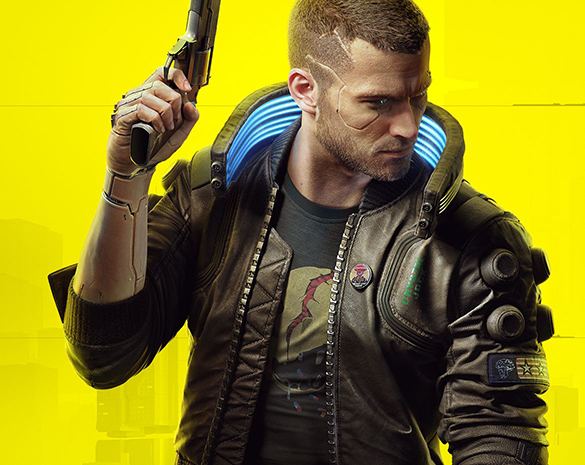

| 夜之城没有活着的传奇 |
“一份伏特加，加冰，青柠汁，姜汁啤酒，对了，再来点爱。” “好的，一杯杰克·威尔斯。”  在夜之城，要是你想找活干，那就来“来生”吧，这个酒吧里有最多的中间人，最多的机会。在吧台上，你可以点一杯由人名来命名的酒：比如“强尼·银手”。想要拥有一杯由自己名字命名的酒，那得先死，还得死得特别精彩，最好是中途就挂了。你问我为什么？因为夜之城里，从来没有活着的传奇。 摩根·黑手  摩根是一名曾参加过第二次美国中部冲突的退伍军人，有时被称为“锤哥（Hammer）”。最初是非常偶然的，成为了一名独狼。摩根在2008年回到家乡，位于美国纽约的布鲁克林，却发现那里早已变成了一片废墟。而下一秒钟，他就发现自己正在保护一位，受到前夫虐待和暴力的邻居。而这件事情，则是以摩根杀死这个虐待狂结束，这也让他得到了在动乱的街头，也能保护弱者的保卫者的头衔。 随着时间的流逝，摩根从原本的保镖工作，开始从事更加危险的工作，再后来发展为战术行动和战略威胁管理。尽管摩根在这些领域的能力非同寻常，但摩根依旧精打细算，乐于助人并亲力亲为，这为他赢得了更大的声誉。摩根依旧是唯一的独狼（Solo’s Solo）。没有任何事情可以阻止他了，而他，也被认为是该行业的头号人物。由他所著的执行者手册（Enforcer's Handbook）发售之后，整个相关行业都得到了改善。迄今，这本手册已经销售了了超过一百万册。很多专业人士所知道的所有事情，都是摩根所教的。但显然，他们却并不能学到摩根所知道的所有知识。 再之后，第四次企业大战在摩根所在的军用科技公司，和其的死对头荒坂公司之间展开了。强尼银手和黑手摩根共同前往荒坂的总部，为了摧毁在总部中的灵魂杀手，一个可以杀死所有接入网络的网络者的邪恶软件。之后的事情则没有人知道发生了什么。有传闻说他们都被荒坂的杀手，亚当·重锤所杀。还有人说，他们没有逃过在企业大战中，轰炸在荒坂总部大楼上的微型核弹。在核爆炸中他们的身体可能都变成了气体。 强尼·银手  强尼·银手原名罗伯特·约翰·林德，是美国广为人知的艺术家，出生于1988年11月16日，青年时代入伍从军，入伍没多久便持枪上阵。美国中美洲冲突始于2000年代。战况惨绝人寰，整个战争由一个腐败且操控大众的政府主导。然而在政府的秘密被泄露之后，许多美军士兵脱下了制服并且离开军队以报复政府。腐败的政府用自己的影响力举行了一次宣传活动蛊惑大众去鄙视逃兵。强尼·银手便决定不再为腐败的政府拼命，而这也很不幸的导致了他丢失了自己的左臂。 他回到了夜之城开始了人生的全新篇章。军旅生涯和战争的残酷永远的改变了他的生活，罗伯特·约翰·林德将自己的名字改成了强尼·银手以示决心。以“银手”为姓和他左臂银色的义体之间的关系不言自明。强尼·银手组建了一个乐队，踏出了反对与揭发腐败政府的第一步。 2013年，强尼在一场演唱会结束之后和自己的女朋友奥特·坎宁安（Alt Cunningham）出去散步，这时他的女友突然被由巨型公司荒坂雇佣的黑帮所绑架。奥特在荒坂公司中被软禁并且被告知她对于荒坂公司是一个重要的资产。他们想要利用她去开发一个可以下载任何网络黑客的思维的软件，名为灵魂杀手。此软件异常危险，可以在抹杀任何她在为前雇主ITS（智能运输系统）工作时下载的思想。 在2023年，强尼和罗格、摩根·黑手、汤普森以及蜘蛛·墨菲领导了一次针对夜之城荒坂公司驻美总部的突袭，试图用小型核弹摧毁荒坂大厦，以终结第四次企业战争。强尼再次来到荒坂的办公室另有原因，他想找到奥特·坎宁安，但一路上遭遇了重重阻碍。其中最大的障碍就是亚当·重锤，一个高度义体化的杀手。 强尼在行动中被认为阵亡遭亚当·重锤杀害。他的尸体至今下落不明，在小型核弹爆炸后，剩下的尘埃中根本没什么可找的了。 V  一个被流放到社会底层的小偷，却在机缘巧合之下目睹了夜之城最大的变故。VTA因此失去了自己最好的朋友，TA的大脑被迫插入relic芯片后与强尼银手的意识开始融合，被搞的乱七八糟，甚至命不久矣，更是莫名其妙的被推到夜之城的风口浪尖。TA经历过恐惧，绝望，背叛，甚至还有死亡。可TA却在最危险的关头选择以残躯化烈火，用自己残存的生命照亮了夜之城的夜空，哪怕那只是一瞬的光芒，TA就是大名鼎鼎的V，夜之城的太阳，夜之城唯一“活着”的传奇。
|